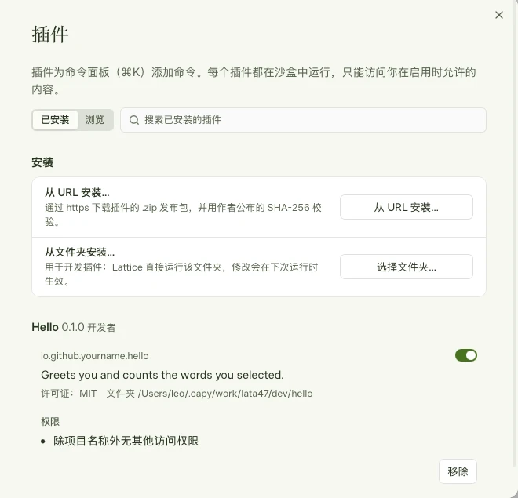
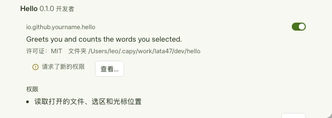
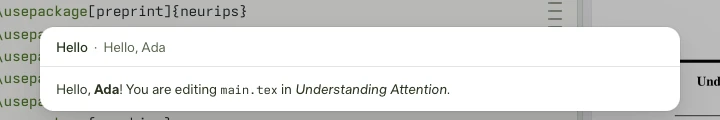

第一个插件
插件会往命令面板（⌘K）里添加命令。一个插件就是一个文件夹，里面有清单文件 lattice-plugin.toml 和一个 Node 脚本。运行它的某个命令时，Lattice 在沙盒中启动这个脚本，通过 stdin 把命令发给它，再把它的回答显示出来：一条消息、一个可供选择的列表，或者文件里的问题。插件从不自己绘制界面，也不自己写文件；它请 Lattice 去做，由用户确认。
本页一步步做出一个叫 Hello 的插件。插件清单与 API 是它用到的所有内容的参考，发布插件 讲怎样把它上架到插件市场。
你需要：
- 一台装有 Lattice 0.18 或更高版本的 Mac。插件目前只在 macOS 上运行，Lattice 用自带的 Node 运行插件，所以安装你插件的人不需要再装任何东西；
- 终端里有 Node 22 或更高版本（
node --version），用来在 Lattice 之外试运行插件和打包。
1. 新建文件夹
mkdir hello && cd hello
curl -fsSLO https://raw.githubusercontent.com/leo1oel/lattice/main/plugin-sdk/lattice-plugin.mjs
lattice-plugin.mjs 就是 SDK：一个 MIT 许可、没有依赖的文件，替你处理通信协议。它要放在你的文件夹里，因为插件只能读取自己的文件夹。它的 TypeScript 类型在 plugin-sdk 里（index.d.ts 和 api.d.ts）。
2. 编写清单文件
新建 lattice-plugin.toml：
schema = 1
id = "io.github.yourname.hello"
name = "Hello"
version = "0.1.0"
api = 1
license = "MIT"
description = "Greets you and counts the words you selected."
runtime = "node"
main = "main.mjs"
[[commands]]
id = "greet"
title = "Say hello"
description = "Greets you by name."
input = { kind = "text", placeholder = "Your name" }
id是插件永久的身份：反向域名、全小写，用你自己拥有的名字，例如io.github.<你的 GitHub 用户名>.<插件名>。app.lattice.*留给 Lattice 自己的插件。api = 1是插件需要的最低插件 API 级别。Lattice 0.18 支持级别 1。- 每个
[[commands]]在命令面板里显示为“Hello:”。<code>input = { kind = "text" }</code> 表示运行命令前先让用户输入一段文字。</li> </ul> <h2 id="3-编写命令">3. 编写命令</h2> <p>新建 <code>main.mjs</code>：</p> <pre><code class="language-js">import { definePlugin, PluginError } from "./lattice-plugin.mjs"; definePlugin({ commands: { async greet({ input, context }) { const name = input?.trim(); if (!name) throw new PluginError("Type your name first."); return { kind: "message", summary: `Hello, ${name}`, markdown: `Hello, **${name}**! This is *${context.project.name}*.`, }; }, }, }); </code></pre> <p><code>commands</code> 下的每个键是清单里的一个命令 id。处理函数会收到 <code>{ input, context, host, signal }</code>，返回一个结果。抛出 <code>PluginError</code> 则把它的消息显示给用户。</p> <h2 id="4-在终端里试运行">4. 在终端里试运行</h2> <p>Lattice 和插件之间用 JSON-RPC 通信，每行一条 JSON 消息。你可以自己扮演 Lattice：</p> <pre><code class="language-sh">( echo '{"jsonrpc":"2.0","id":1,"method":"initialize","params":{"hostApiLevel":1,"hostApiCompat":1}}' echo '{"jsonrpc":"2.0","id":2,"method":"command/run","params":{"command":"greet","input":"Ada","context":{"project":{"name":"thesis"}}}}' sleep 1 ) | node main.mjs </code></pre> <p>插件回答这两条消息：</p> <pre><code class="language-text">{"jsonrpc":"2.0","id":1,"result":{"apiLevel":1}} {"jsonrpc":"2.0","id":2,"result":{"kind":"message","summary":"Hello, Ada","markdown":"Hello, **Ada**! This is *thesis*."}} </code></pre> <p>如果把 <code>"input"</code> 改成 <code>""</code>，它会改为回答 <code>{"code":-32000,"message":"Type your name first."}</code>。<code>sleep 1</code> 让 stdin 在插件回答期间保持打开：stdin 一关闭 SDK 就退出，因为 Lattice 正是这样结束一次运行的。</p> <h2 id="5-从文件夹安装">5. 从文件夹安装</h2> <ol> <li>打开 <strong>设置 › 插件</strong>，在 <strong>从文件夹安装…</strong> 旁边选择 <strong>选择文件夹…</strong>，选中 <code>hello</code> 文件夹。</li> <li>Hello 出现在 <strong>已安装</strong> 中，标为 <strong>开发者</strong>，处于关闭状态。把它开启：Lattice 会问“启用 Hello？”，并列出它将能够做的事，这里是“除项目名称外无其他访问权限”。选择 <strong>启用</strong>。</li> <li>打开一个项目，按 <code>⌘K</code>，输入“hello”，选择 <strong>Hello: Say hello</strong>。输入你的名字，按回车。命令面板显示“Hello, <strong>Ada</strong>! This is <em>Understanding Attention</em>.”</li> </ol> <p><p></p></p> <p>Lattice 直接运行这个文件夹，并且每次运行都会重新读取，所以保存 <code>main.mjs</code> 或清单文件后，再运行一次命令即可。</p> <h2 id="6-读取项目">6. 读取项目</h2> <p>没有任何权限时，插件只能知道项目的名称。要读取更多内容，插件要在清单里申请，用户开启它时同意。把 <code>lattice-plugin.toml</code> 换成下面这一版，它加上了 <code>[permissions]</code> 表和第二个命令：</p> <pre><code class="language-toml">schema = 1 id = "io.github.yourname.hello" name = "Hello" version = "0.1.0" api = 1 license = "MIT" description = "Greets you and counts the words you selected." runtime = "node" main = "main.mjs" [permissions] project-read = ["context"] [[commands]] id = "greet" title = "Say hello" description = "Greets you by name." input = { kind = "text", placeholder = "Your name" } [[commands]] id = "count" title = "Count words in the selection" </code></pre> <p><code>project-read = ["context"]</code> 让插件拿到主文档、当前文件、参考文献路径、选区（最多 12,000 个字符）和光标位置。再把 <code>main.mjs</code> 换成下面这一版，用上它们：</p> <pre><code class="language-js">import { definePlugin, PluginError } from "./lattice-plugin.mjs"; definePlugin({ commands: { async greet({ input, context, host }) { const name = input?.trim(); if (!name) throw new PluginError("Type your name first."); host.log("info", `greeting ${name}`); const file = context.project.activeFile ?? "no file"; return { kind: "message", summary: `Hello, ${name}`, markdown: `Hello, **${name}**! You are editing \`${file}\` in *${context.project.name}*.`, }; }, async count({ context }) { const selection = context.selection; if (!selection?.text) throw new PluginError("Select some text first."); const words = selection.text.split(/\s+/).filter(Boolean).length; return { kind: "items", summary: `${words} words selected`, items: [ { id: "words", title: `${words} words`, subtitle: `${selection.file}, line ${selection.from.line}`, actions: [ { type: "copy", title: "Copy the count", text: String(words) }, { type: "reveal", title: "Show the selection", file: selection.file, line: selection.from.line }, ], }, ], }; }, }, }); </code></pre> <p><code>count</code> 返回的是一个列表而不是消息。每个条目带有操作（action），即 Lattice 替插件执行的动作：按回车执行第一个，这里是复制字数。</p> <p>带上选区试运行 <code>count</code>：</p> <pre><code class="language-sh">( echo '{"jsonrpc":"2.0","id":1,"method":"initialize","params":{"hostApiLevel":1,"hostApiCompat":1}}' echo '{"jsonrpc":"2.0","id":2,"method":"command/run","params":{"command":"count","context":{"project":{"name":"thesis"},"selection":{"file":"main.tex","text":"Attention is all you need","from":{"line":12,"column":1},"to":{"line":12,"column":26}}}}}' sleep 1 ) | node main.mjs </code></pre> <p>回到 Lattice，再运行一次 <strong>Hello: Say hello</strong>。它不会运行：插件现在申请的权限超出了你允许的范围，所以命令面板提示“此插件请求了新的权限。请在“设置 › 插件”中查看。”选择 <strong>打开设置</strong>。Hello 的卡片显示 <strong>请求了新的权限</strong>；选择 <strong>查看…</strong>，核对列表，再选择 <strong>启用</strong>。所有已安装的插件都是这样，所以插件不可能在用户不知情的情况下获得访问权限。</p> <p><p></p></p> <p>现在 <strong>Hello: Say hello</strong> 会说出你正在编辑的文件，<strong>Hello: Count words in the selection</strong> 会统计你选中的字数；按回车复制这个数字。</p> <p><p></p></p> <h2 id="7-查看日志">7. 查看日志</h2> <ul> <li><p><strong><code>host.log(level, message)</code></strong> 写入 Lattice 的日志 <code>~/Library/Logs/app.leo1oel.researchwriter/lattice.log</code>，每行带有 <code>lattice::plugins</code> 标记和你插件的 id。开发时可以一直跟着看：</p> <pre><code class="language-sh">tail -f ~/Library/Logs/app.leo1oel.researchwriter/lattice.log | grep --line-buffered lattice::plugins </code></pre> <p>运行 <strong>Hello: Say hello</strong> 会添加一行，结尾是 <code>io.github.yourname.hello: greeting Ada</code>。<strong>设置 › 日志 › 打开日志文件夹</strong> 可以打开这个文件夹。</p> </li> <li><p><strong><code>console.log</code> 和 stderr。</strong> SDK 把 <code>console.log</code> 输出到 stderr，因为 stdout 用来传协议。插件没有作答就停止时，Lattice 会在命令面板里显示它 stderr 的最后部分。其他情况下 stderr 只在 <code>debug</code> 级别写入日志，所以要从终端启动 Lattice 才能看到：</p> <pre><code class="language-sh">LATTICE_LOG=debug /Applications/Lattice.app/Contents/MacOS/research-writer </code></pre> </li> <li><p><strong>不要自己往 stdout 打印。</strong> stdout 上出现一行不是 JSON-RPC 的内容，这次运行就会结束，命令面板显示“插件返回了 Lattice 无法读取的内容”。</p> </li> </ul> <h2 id="接下来">接下来</h2> <ul> <li><a href="plugin-reference.html">插件清单与 API</a>：所有权限、Lattice 调用、结果和操作。</li> <li><a href="plugin-publishing.html">发布插件</a>：打包 Hello，上架插件市场，发布更新。</li> <li>两个可以照抄的真实插件：<a href="https://github.com/leo1oel/lattice/tree/main/examples/plugins/bib-check">bib-check</a>（检查 <code>.bib</code> 文件的问题）和 <a href="https://github.com/leo1oel/lattice/tree/main/examples/plugins/zotero-search">zotero-search</a>（搜索 Zotero 并插入引用）。</li> </ul> </main> </div> </body> </html>